Visual results: four stages, observations, static assignment and CG
Retained original visual cover
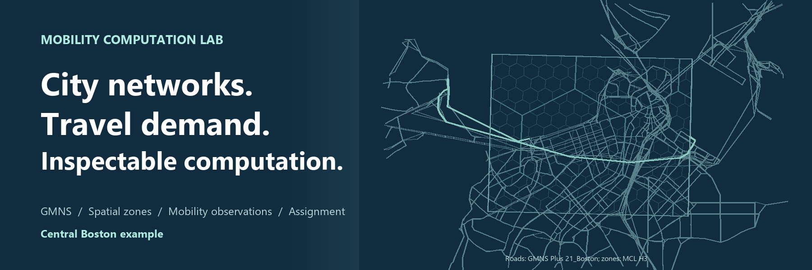
The earlier cover remains in this gallery after the landing page adopts the complete project map. Its source-qualified Boston figure families and all numerical case plots remain below.
This gallery links accepted saved-result figures for Boston, Sioux Falls and the bounded Hong Kong full-stack technical case. It does not rerun optimization or invent observations. The new three-city representation-level series distinguishes network construction, one generated column, and final physical-link movement-flow back-projection. City scales and certificate statuses remain separate.
Three representation levels across three cities
| Scientific object | Boston | Sioux Falls | Hong Kong |
|---|---|---|---|
| Physical network → finite time-expanded graph | Network construction | Network construction | Network construction |
| One generated column as a time-indexed path | B07 accepted column | XS170 retained column | HK10 accepted R5 column |
| Time-expanded movement-arc flows → final physical-link movement flow | Boston 125-link projection | Sioux 64/69-link projections | Hong Kong 111-link projection |
Each linked case provides a same-size PNG/SVG, caption, exact input-hash sidecar and its complete original figure collection. The finite statistics table keeps objectives on their own graphs; Hong Kong ADMM remains gated, and historical Sioux independent pricing closure is not established.
The additional Sioux Lagrangian R2 and earlier ADMM R1 paired figures document accepted selected-OD finite space–time shared-capacity evidence. That R1 ADMM 250-OD view is drawn from final metrics only; no R1 iteration history was invented. The newer R2_S lane below uses its own accepted saved histories. Hong Kong's five original R1 data-layer SVGs remain historical and have no assignment-flow interpretation; the later R2–R5 figures are separate saved computations.
Hong Kong bounded full-stack and current CG R5

Turn-aware, official-derived bounded network; zone access and model attributes are explicit. GMNS/source contract · SVG and source sidecar.


The unchanged ten-demand finite case clears Phase I in 12 rounds. Current CG case · Source record.

The independent full-DAG certificate passes 10/10 demands at 1e-6; this is not inferred from reference-objective agreement. Redacted certificate · Source record.

The modeled finite-CG movement flow is projected onto original physical links, not observed traffic. Full case and remaining individual figures · R5 figure manifest. The separate Hong Kong ADMM R2 transfer remains gated before accepted outer iterations.
ADMM R2 · finite space–time shared capacity

The ADMM R2 method contract leads to matched saved-result galleries for Sioux Falls 200/250 selected ODs and the rights-cleared Boston 10-OD frozen holdout. Each includes residual and feasibility traces, same-graph LP objective comparison, physical-link scatter and maps. Sioux 200 and Boston 10 also show commodity-level local conservation. The Boston signed map preserves its 4.24e-4-vehicle maximum and uses only previously public GMNS geometry. All 22 accepted figure families retain individual SVG/PNG files and source sidecars; the 125-row Boston derived table is published without private dynamic inputs. This gallery does not rerun a solver.
Static Algorithm B / matched saved figure families
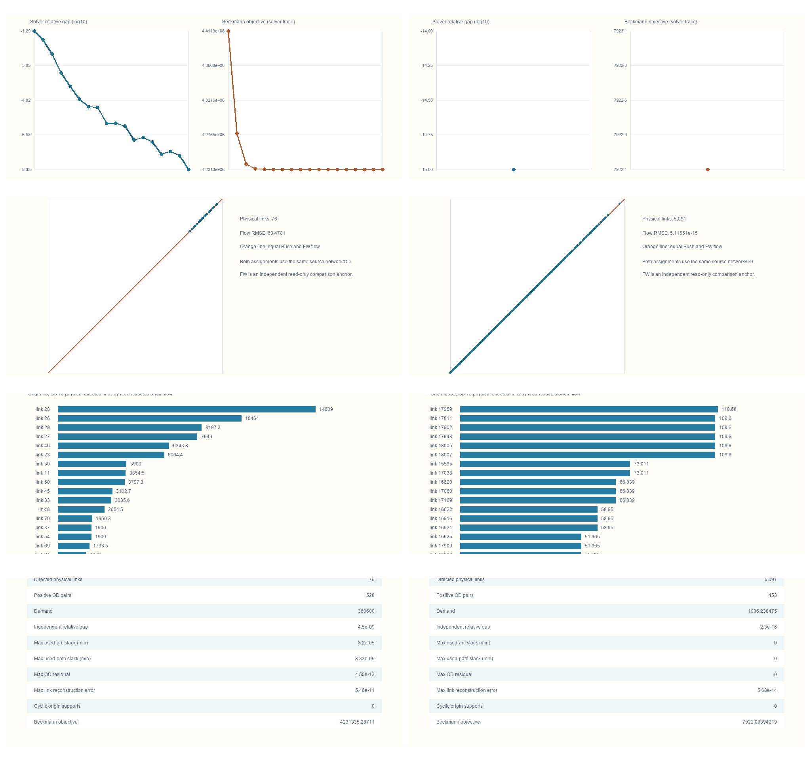
The overview uses display crops of the eight accepted R2 SVGs, ordered as convergence, same-problem FW physical-link comparison, selected-origin flow reconstructed from exported OD paths, and independent verification. The complete panels and explanatory captions remain on the Sioux Falls and Boston case pages. Boston's one-point convergence is the saved trace, not an invented sequence; its selected-origin bars are not native Bush internal state or observed traffic. Editable overview · Crop and source-hash contract · Adapter status.

Central Boston: demand, observations and static assignment
The four-stage walkthrough links actual data to each stage. Generation, OD distribution, mode response and road assignment have separate result figures. The GPS feedback explains where observations enter; the original five-map gallery remains available as spatial context and saved outputs.
Retained Boston/Sioux finite CG figure families
| Shared figure family | Boston | Sioux Falls |
|---|---|---|
| Historical physical-to-time cutaway | Actual B07 construction and column | Actual XS170 local cutaway |
| Phase I restores feasibility | Total and B01–B10 artificial-flow clearance | 200/250-OD total and OD-level clearance |
| A new path can help a different OD | B07/B09/B10 shared-capacity event | XS170/XS169 shared-capacity event |
| Phase II improves the real-path objective | Boston Phase-II objective and reference | 200/250-OD Phase-II objectives and references |
| Final physical-link movement flow and validation | Boston final flow and audit | 200/250-OD final flow and audit |
| Independent pricing closure | Established for 10/10 demands | Not established for the retained historical runs |
Both cases have matching six-panel saved-result figures with identical canvas and panel order. The figures use restrained panel letters; explanations and limits sit in the case-page captions rather than in title cards inside the images:
| Boston · one bounded pilot | Sioux Falls · two historical selected-OD benchmarks |
|---|---|
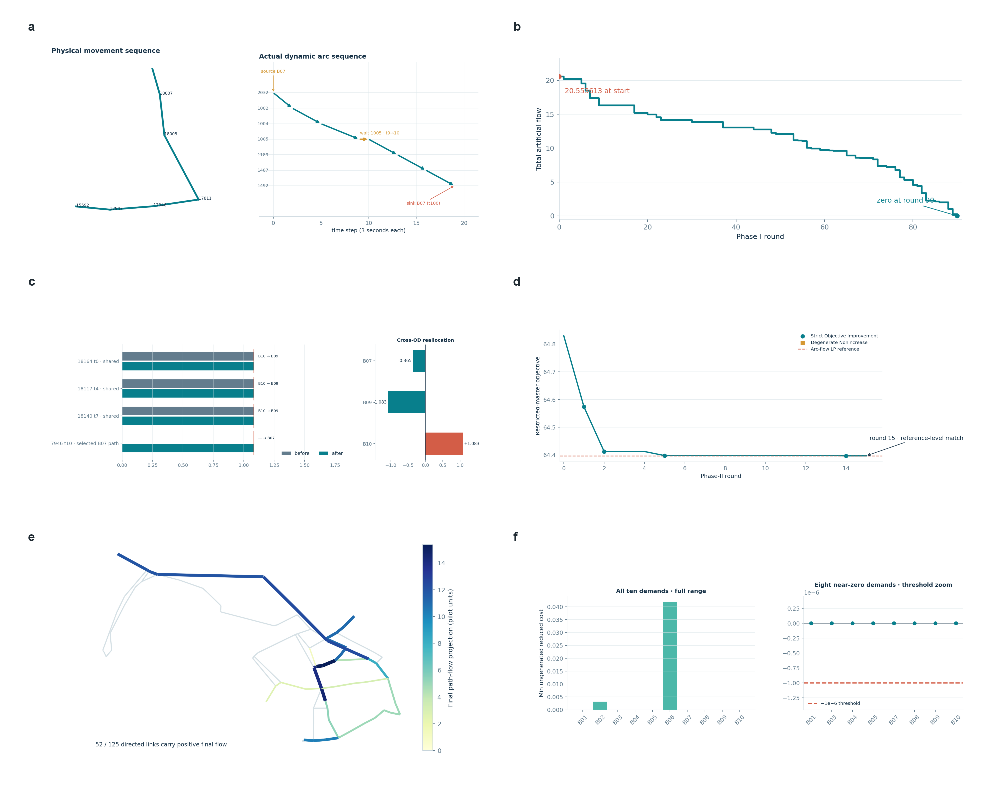 |  |

Display crops retain the plotted curves, axes, maps and time-network geometry while moving explanatory prose outside the composite; the complete originals remain linked in the case pages. No optimizer, pricing routine, demand model or map-matching routine was rerun. Exact source hashes, crop coordinates and no-solve renderer · Boston SVG · Sioux Falls SVG.


Executed finite space–time CG at a glance

This compact overview uses the canonical six-stage vocabulary without repeating the detailed case panels. No optimizer or pricing oracle was rerun. Boston is one bounded real-city pilot with independent pricing closure for 10/10 demands. Sioux Falls retains separate 200-OD and 250-OD historical selected-OD benchmarks with reference-objective agreement on their own finite time-expanded graphs; independent pricing closure is not established for those runs. Current SVG · Current source hashes · Earlier saved overview and its source manifest.


Boston bounded CG figure family
| Single-pilot summary | Physical-to-space–time construction |
|---|---|
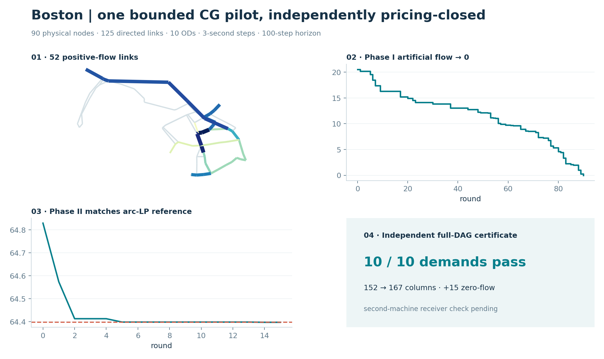 | 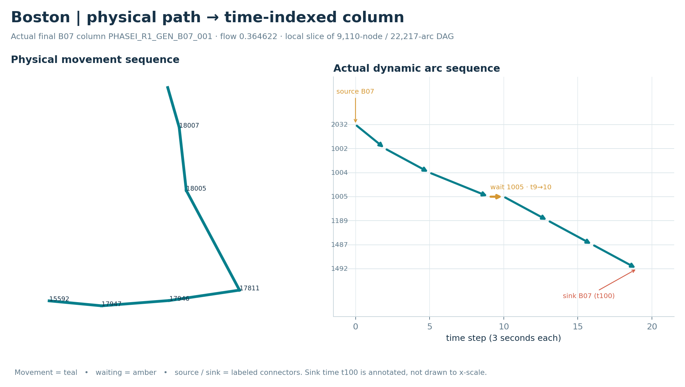 |
| Phase-I feasibility restoration | Phase-II objective and reference |
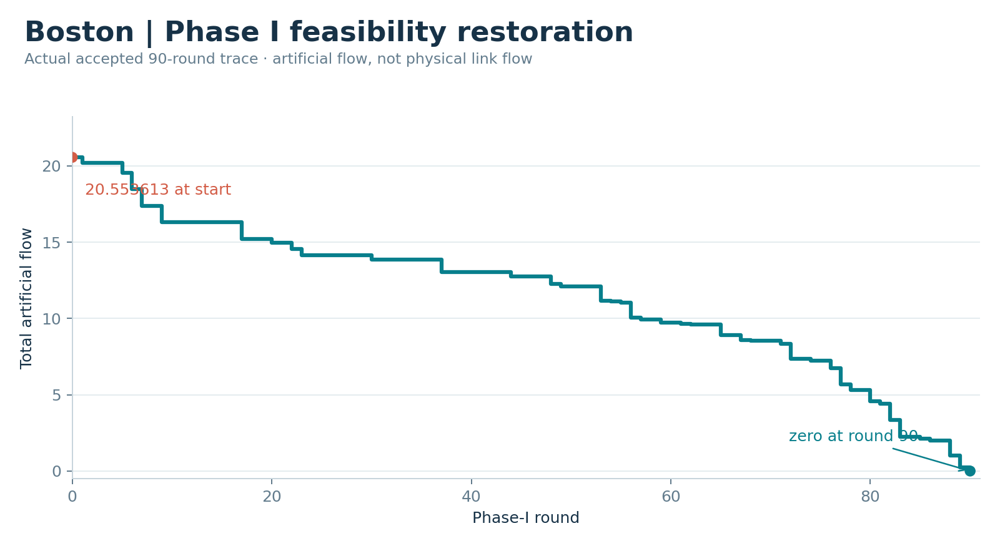 | 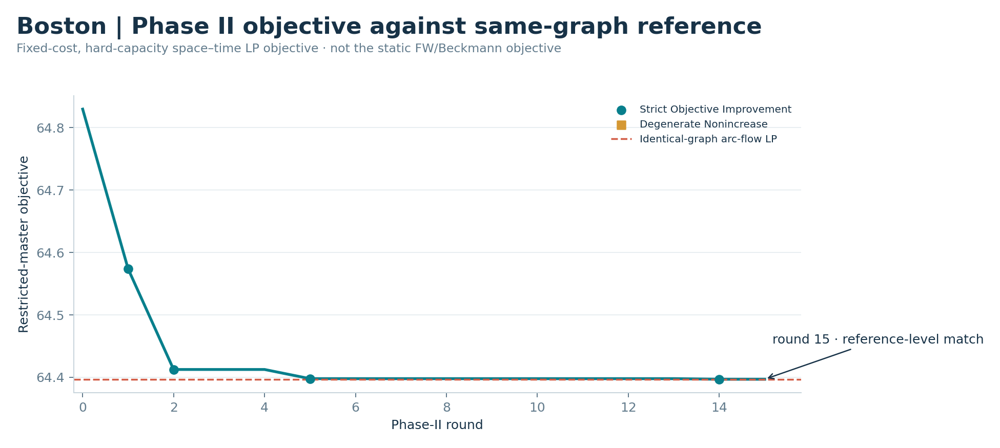 |
| R4 continuation | Independent by-demand pricing closure |
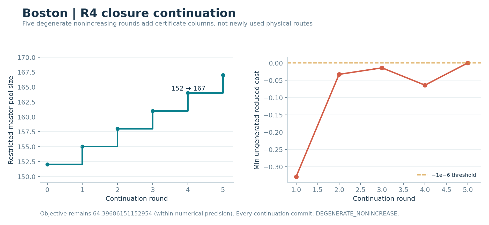 | 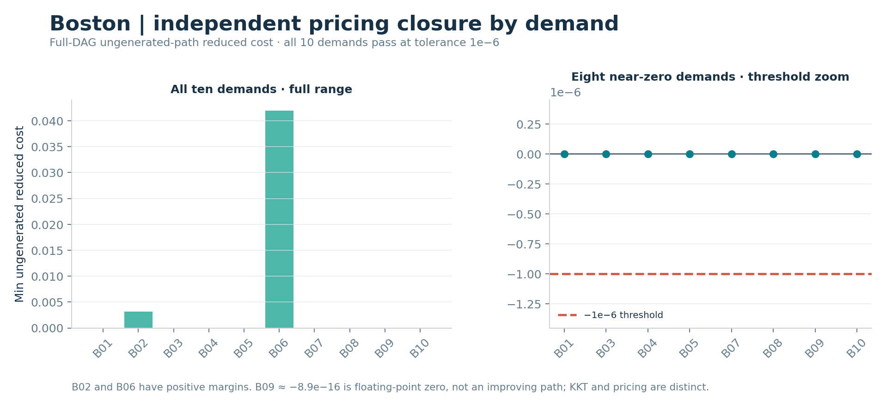 |
The remaining Boston counterparts—final physical-link flow, OD-level Phase-I clearance, shared-capacity event and final validation—are collected on the full Boston CG case page.
Scope and supplementary evidence
The Boston finite space–time CG page retains the full scientific figure family: final physical-link movement flow, actual time-indexed column construction, Phase-I total and per-demand clearance, a recorded cross-OD shared-capacity event, Phase-II objective/reference, final validation and the Boston-only independent pricing-closure continuation. It is 90 physical nodes / 125 directed links / 10 ODs, not a citywide or second-scale Boston solve.
Composed summary · All source/figure hashes.

Sioux Falls historical selected-OD benchmarks
The Sioux Falls finite space–time CG page retains two distinct historical benchmark instances: 200 ODs and 250 ODs. They agree with the arc-flow LP objectives on their own selected-OD finite time-expanded graphs; independent pricing closure is not established. Boston's R4 certificate is not transferred to them.
Final physical-link movement flow
| 200 OD · 64 selected links | 250 OD · 69 selected links |
|---|---|
 |
 |
Line width encodes final movement flow aggregated across modeled time. These are schematic network views: opposite directions may overlap, and colors are not a quantitative scale. Do not read them as observed traffic, static V/C, precise road-shape GIS or a full 528-OD assignment.
Phase II improves the real-path objective
| 200 OD | 250 OD |
|---|---|
 |
 |
Each curve is compared with the arc-flow LP on its own selected-OD finite time-expanded graph. Different OD selections define different optimization instances; their objective values are not directly comparable as an algorithmic improvement measure.
Phase I restores feasibility
| 200 OD | 250 OD |
|---|---|
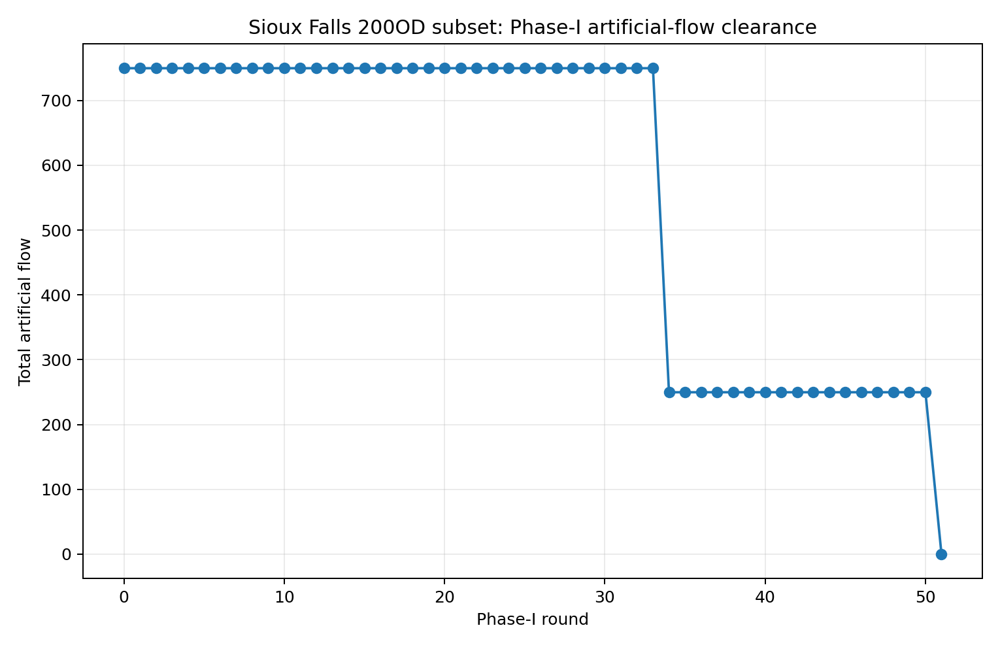 |
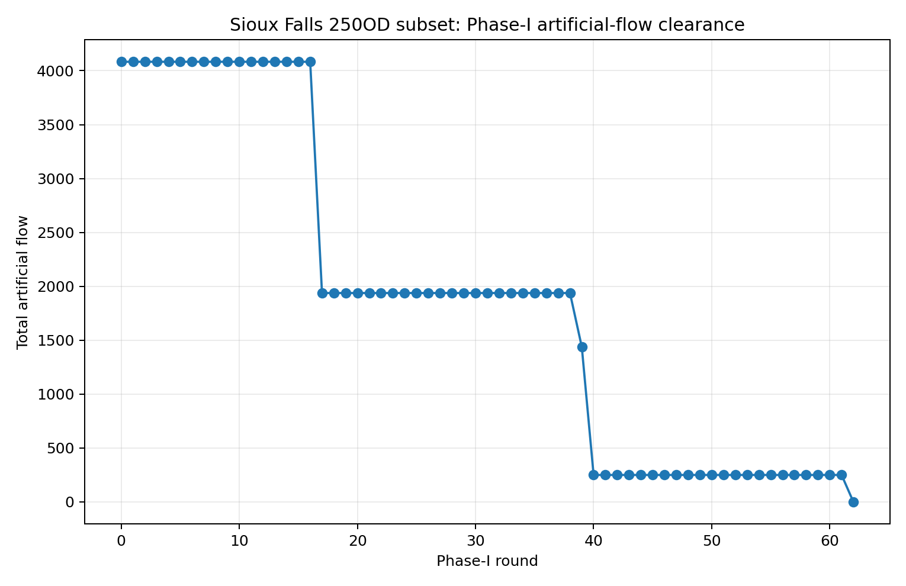 |
Artificial flow is an algorithmic feasibility device, not an observed queue or discarded real demand. Its progression belongs to the successful solve and is retained for interpretation.
Data cards and numerical scope
The 200-OD record and 250-OD record explain saved versus uniquely reconstructed final path flows, objective checks and remaining certificate boundaries. Full raw inputs and reconstruction evidence are not redistributed here. The static FW record is a separate static model, not another point on these CG curves.
Network catalog · Outputs and verification · City workflow
Retained alternate formats and historical figures
The case and method pages above display the current scientific panels. The following original files are retained at their source paths, including vector counterparts and historical layouts that are not current inline panels. These links do not imply a new run, a new case scale, or an accepted result.
Admm R2
- admm_boston_10od_final_physical_link_flow.svg
- admm_boston_10od_local_conservation_heatmap.svg
- admm_boston_10od_minus_lp.svg
- admm_results_overview.svg
- admm_sioux_200_final_physical_link_flow.svg
- admm_sioux_200_local_conservation_heatmap.svg
- admm_sioux_200_minus_lp.svg
- admm_sioux_250_final_physical_link_flow.svg
- admm_sioux_250_minus_lp.svg
- convergence_C1.png
- convergence_C1.svg
- physical_flow_Boston_10OD.png
- physical_flow_Sioux_200OD.png
- physical_flow_Sioux_250OD.png


Algorithm B R21


Boston
- boston_abs_planned_fw_flow.svg
- boston_abs_planned_l3_rank26_flow.svg
- boston_abs_planned_l3_rank26_minus_fw.svg
- boston_abs_planned_l3_rank52_flow.svg
- boston_abs_planned_l3_rank52_minus_fw.svg
- step1_generation.svg
- step2_distribution.svg
- step3_mode_response.svg
- gmns_connected_layers.svg
- gps_to_gmns_evidence.svg
- endpoint_2000_coverage.png
- endpoint_2000_coverage.svg
- endpoint_500_coverage.svg
- endpoint_all_coverage.svg
- fw_2000_flow.svg
- fw_500_flow.svg
- fw_all_flow.svg
- source_zone_2000_coverage.png
- source_zone_2000_coverage.svg
- source_zone_500_coverage.svg
- source_zone_all_coverage.svg
- mcl_boston_hero.svg
- mcl_social_preview.png


Hero.Png

Hero.Svg

Hong Kong
- hk_cg_case_sequence.png
- hk_cg_case_sequence.svg
- hk_validation_panel.png
- hk_validation_panel.svg
- hk_admm_residuals_and_feasibility.svg
- hk_cg_phase_i_phase_ii.png
- hk_cg_phase_i_phase_ii.svg
- hk_detector_and_trajectory_evidence.png
- hk_detector_and_trajectory_evidence.svg
- hk_four_stage_pipeline.png
- hk_four_stage_pipeline.svg
- hk_lagrangian_dual_primal_gap.png
- hk_lagrangian_dual_primal_gap.svg
- hk_physical_to_time_expanded.svg
- hk_same_graph_method_comparison.png
- hk_same_graph_method_comparison.svg
- hk_spacetime_final_physical_flow.png
- hk_spacetime_final_physical_flow.svg
- hk_speed_lane_capacity_evidence.png
- hk_speed_lane_capacity_evidence.svg
- hk_validation_panel.png
- hk_validation_panel.svg


Presentation R3
- framework_overview.svg
- sioux_capacity_exchange.svg
- sioux_phase_i_pair.png
- sioux_space_time_construction.svg


Sioux
- admm_sioux_200.png
- sioux_200od_objective_difference.png
- Sioux_200OD_P07.png
- sioux_250od_objective_difference.png
- Sioux_250OD_P07.png
- od_level_phase_i_clearance.svg
- sioux_falls_200od_phase_i_academic.svg
- sioux_falls_250od_phase_i_academic.svg


Three City R1
- boston_finite_space_time_case_sequence.svg
- boston_generated_column_time_indexed_path.svg
- boston_physical_to_time_expanded_graph.png
- boston_physical_to_time_expanded_graph.svg
- boston_time_expanded_to_physical_link_flow.svg
- hong_kong_finite_space_time_case_sequence.svg
- hong_kong_generated_column_time_indexed_path.svg
- hong_kong_physical_to_time_expanded_graph.png
- hong_kong_physical_to_time_expanded_graph.svg
- hong_kong_time_expanded_to_physical_link_flow.svg
- sioux_finite_space_time_case_sequence.svg
- sioux_generated_column_time_indexed_path.svg
- sioux_physical_to_time_expanded_graph.png
- sioux_physical_to_time_expanded_graph.svg
- sioux_time_expanded_to_physical_link_flow.svg